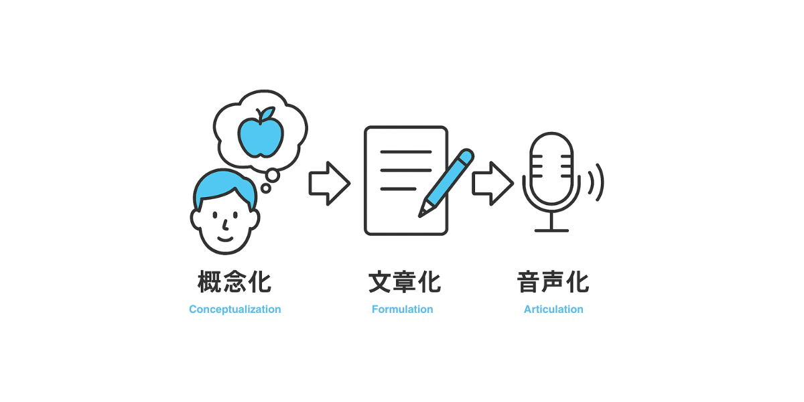
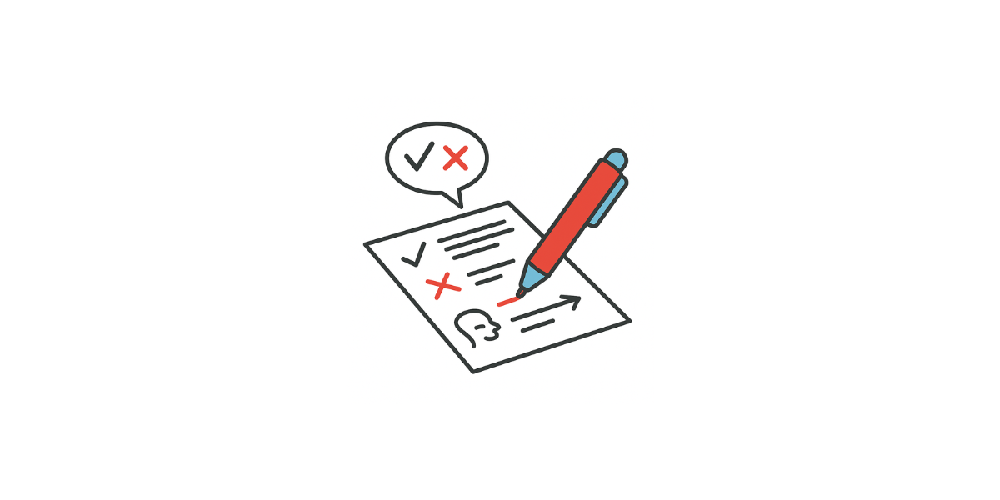

著者プロフィール
椿祐輔
The Past CEO
VERSANT満点(90点)、CEFR C2レベルの英語力を有する。フィリピンの語学学校で10年以上にわたりカリキュラムと教材開発に従事し、述べ5,000人以上の多国籍な英語学習者（日本、中国、台湾、ベトナム、ロシア等）の学習をサポート。言語学と音声学に精通しており、現在は株式会社The Pastの代表取締役、カリキュラム開発者として、グローバルな英語教育を推進している。
導入(課題想起)
英語のスピーキング力を伸ばしたい。
でも、ただ「勉強」するのはしんどい──そう感じていませんか？
できるだけラクに、それでも確実に英語が話せるようになりたい。
できれば、最初の学習からすぐに効果を感じたい。
そんな気持ちに応えるために、この記事ではAIを活用した最新のスピーキング学習法をご紹介します。
なかでも「ChatGPT」を使った練習法は、2025年現在、多くの英語学習者にとって最も効率的な選択肢のひとつです。
今すぐに効果を実感したい方は、本編の「ChatGPTを使った勉強法［自己紹介編］」までスキップしてみてください。
スピーキングとは？
スピーキング力を伸ばすには、まず「話す」とはどんな行為なのかを理解することが大切です。
スピーキングの3つのプロセス
英語を話す際のスピーキングプロセスは、大きく「概念化」「文章化」「音声化」の3ステップに分けられます。それぞれのステップがどのような役割を持つか、確認しましょう。
- 概念化: 伝える内容を考えるプロセス
概念化とは、「何を伝えたいか」を明確にするプロセス。日本語であれば無意識に行っていることが、外国語ではあえて意識する必要があります。 - 文章化: 英語の文に組み立てるプロセス
文章化とは、概念化したアイデアを実際の英文に落とし込む作業です。ここで必要なのは語彙力や文法力だけでなく、それらを即座に結びつけられるアウトプットの訓練です。 - 音声化: 明瞭な発音・イントネーションで声に出すプロセス
音声化は、文章化で作成した文を実際に口に出す段階。ここでは正確な発音、自然なイントネーション・リズムが問われます。
この3つのステップを意識しながら学習することで、英語スピーキング力を効率よく伸ばすことが可能です。
話せない3つの原因と、話せる人の特徴
英語がうまく話せないと感じるとき、その原因は「概念化」「文章化」「音声化」の3つのプロセスのどこかにあります
ここでは、それぞれのプロセスで話せない状態と話せる状態の違いを比較しながら見ていきましょう。
1. 概念化：伝える内容を考えるプロセス
| 話せない状態 | 話せる状態 |
|---|---|
|
|
2. 文章化：英語の文に組み立てるプロセス
| 話せない状態 | 話せる状態 |
|---|---|
|
|
3. 音声化： 明瞭な発音・イントネーションで声に出すプロセス
| 話せない状態 | 話せる状態 |
|---|---|
|
|
なんとなく「話せない」と感じている方も、どこで詰まっているのかを明確にするだけで学習効率は大きく変わります。
特にビジネスパーソンは、内容が難しくなりすぎてしまう傾向があるので要注意です。
まずは自分のスピーキング習慣を振り返ってみてください。
そして、こうした「話せる力」が実際にどれほど身についているかを知るには、英語テストのVERSANTが役立ちます。
この試験は、20分で話す力を「聞く・理解する・組み立てる・発話する」という一連の流れで評価し、流暢さ・語彙・文の構成力・発音・リスニングなどを総合的にスコア化します。
AIによる自動採点により、短時間で精度の高いフィードバックが得られるのも特徴です。学習の成果を可視化し、次のステップを考えるうえで、信頼できる指標となるでしょう。
Chat GPTを使った勉強法[自己紹介編]
ChatGPTはログインなしでも利用できますが、より良い結果を得たい場合は、無料アカウントを作成してログインしたうえでの利用をおすすめします。
この記事では、初めての商談において最も重要な“第一印象”を左右する自己紹介を、ChatGPTを活用して効率よく学ぶ方法をご紹介します。
先ほどご紹介したスピーキングの3ステップに照らし合わせると、「概念化」と「文章化」はAIに任せ、「音声化」に集中して練習するのが効果的です。
以下の流れに沿って、相手に好印象を与え、信頼を築く自己紹介をつくっていきましょう。
1.理想のモデルをインプット
AIでより良い結果を得たいのであれば、理想的なモデルを学習させ、自分用にカスタマイズさせるのが最も効率的です。
ChatGPTを開いて、以下のプロンプトをコピペしましょう。
業種は[〇〇]です。以下のテンプレートに沿った英語の自己紹介文と日本語訳を作成しなさい。
Hi, I’m [1. ニックネーム] from [2. 会社名].
I’m part of the [3. 部署・チーム名] and mainly [4. 担当している業務 or 関わる相手・目的].
I’m here today to [5. 訪問・参加の主目的] and [6. サポート・提案の意図].
Thanks for having me—I'm looking forward to our [7. 会話や関係性に関する締めの言葉].
※〇〇に業種(製造業/教育など)を入力してご利用ください。
2.自己紹介文の作成
続いて、以下の「：」の右に日本語で ご自身の情報を入力してください。 迷いやすいところは「例：」を参考に入力してみましょう。
以下の日本語の回答を基に、70語程度の英語の自己紹介文を完成させなさい。
- ニックネーム：
- 会社名：
- 部署名：
- 業務内容など：
例：法人営業、新規顧客対応、社内研修の設計、開発プロジェクトの進行など - 今回の訪問・参加の主な目的：
例：現状の課題をヒアリングするため、新サービスのニーズを確認するため - 提案や支援の目的・意図
例：連携の可能性を探るため、よりよい提案ができるようにするため - 締めの言葉（楽しみにしていること）：
例：お話しできること、意見交換、今後の連携 など
※Chat GPT無料版では、上記のように一部が日本語で表示される場合もあります。
3.校正
前のステップで、 理想通りにならなかった文章もここで校正します。
以下の点に注意し、より自然な英語の自己紹介文(日本語訳つき)となるようステップ・バイ・ステップで校正してください。
- 日本語の語句があれば、適切に英語に翻訳してください。
- より自然で適切な言い回しがあれば修正し、その理由も説明してください。
より適切な表現と、その表現が選ばれた理由を解説してくれます。
英日の自己紹介が完成しました。
4.日本語訳を英語の語順に並び替える
美味しい料理に下ごしらえが欠かせないように、英語学習もこのステップでひと手間かけることで、理解の質がグッと上がります。
英語を日本語に訳すのではなく、英語の語順のまま理解する感覚を養う練習です。
この作業は「サイトトランスレーション」や「直読直解」と呼ばれ、スピーキングにおける文章化の力を高めるのにも役立ちます。
回は1分程度の自己紹介なので、中級〜上級の方であればこのステップをスキップしていただいても問題ありません。
以下のルールに従って、日本語訳を英語の語順で並べ替え、スラッシュ (/) で各部分を区切ってください
ルール：
- 英語の語順を最優先にし、翻訳時には日本語の自然な語順よりも英語の語順を反映させます。
- 各文を一文ごとに分けて、英語の語順に従って意味の塊（チャンク）ごとにスラッシュ (/) で区切ります。
- 英語の語順をそのまま反映し、できるだけ簡潔に、必要な部分だけをチャンクとして分けます
正解例：
英語：I went to the park yesterday.
日本語（英語の語順に従って）：私は / 行きました / 公園に / 昨日
英語：She is reading a book in the room.
日本語（英語の語順に従って）：彼女は / 読んでいます / 本を / 部屋で
誤った例：
英語：I went to the park yesterday.
日本語：私は昨日公園に行きました。
英語：She is reading a book in the room.
日本語：彼女は部屋で本を読んでいます。
出てきた日本語が不自然な場合は、 以下のプロンプトで再度校正してみてください。
以下の点に注意して、ステップ・バイ・ステップで改善してください。
- 日本語の語順が英語の語順に合っているかを確認してください。
- 意味の塊（チャンク）ごとに、少し長めの日本語訳を作成してください。
5. 虫食い英訳 レベル1
英語フレーズの一部を空欄にし、日本語訳をヒントにしながら、スムーズに言えるまで音読しましょう。
この練習では、意味を意識しながらフレーズの型を定着させていくことがポイントです
今回隠している語句の一覧は、チャットの下部に記載していますので、必要に応じてご確認ください
上記の自己紹介文を、以下のルールで一部の英語の語句のみ ( ) で非表示にしてください。
■ルール：
- 非表示にする語句は、英語学習者が混乱しやすいコロケーションや表現、または難易度が高い語句を選んでください。
- 日本語はそのまま表示します。
- 英文と日本文を1文ずつ表示します。
- 最後に隠した英語の語句をまとめて表示し、復習しやすくしてください。
例：
こんにちは / 私はヤスです / 株式会社The Pastからきました
Hi, I’m ( ) from ( ) .

6.虫食い英訳 レベル2
難易度を上げて、空欄の数を増やした状態で、つまずかずに言えるまで音読練習を行いましょう。
（ ）部分は、「interested (in)」のような、よく使われる語句のペアを中心に選んでいます。
これらを瞬時に補えるようになることで、仮に”in”のような機能語が聞き取れなくても、文の構造から意味を推測する力が養われていきます。
1文あたりの（ ）で非表示にする語句を増やし、難易度を上げてください。
また、最後に隠した英語の語句をすべてまとめて表示し、復習しやすくしてください。
※ 1番あたりの（ ）の数が増えている。
7.虫食い英訳 レベル3
英文を全て隠し、 最終テストの準備をします。
日本語訳だけを手がかりに、スムーズに英語が口から出てくるまで音読練習しましょう。
あなたは英語講師です。日本語訳のみを表示し、その後に私が入力する英文が先程の英語の自己紹介と一致しているかを確認してください。もし相違があれば、指摘した上で、正しい自己紹介文を最後に表示してください。
8. 入力
スムーズに暗唱できるレベルまで音読練習ができたかを確認するために、ChatGPTの音声入力機能を使って自己紹介を話してみましょう。
日本語訳を参考にしながら、先ほど練習した内容を英語で声に出してみてください。
チャットボックスにあるマイクのアイコンをタップ／クリックすると、音声入力が始まります。
英語のリズムに自信がない方も、AIにどのようにじぶんの発音が理解されるのか、弱点発見のいい機会です。
上記のように発音に対するフィードバックが得られるため、次のステップにもつなげやすくなります。
9.音声化・音読練習
ここで少しChatGPTから離れて、音読練習にフォーカスしていきます。
入力した文字を音声化してくれる、Text to Speech(以下、TTS)は英語学習には欠かせません。
中でもおすすめなのNarakeet。音声の自然さが高く、しかも音源のダウンロードまで無料で使える優れたTTSツールです。
使い方はシンプルです。
Webサイトにアクセスし、スクリプト欄に先ほど作成した自己紹介文を貼り付けて、画面右下の「Create Audio」をクリックするだけ。
しばらく待つと音声が生成されるので、音声ファイルをダウンロードして練習に使いましょう。
音読練習のポイント
音読では、英語のリズムやイントネーションを正確に再現することを意識しながら、2つの練習方法を組み合わせるのが効果的です。
目標は、スムーズかつ安定した発話ができる状態をつくることです。
① オーバーラッピング（Overlapping）
英語音声と同じスピード・リズムで、スクリプトを見ながら同時に発話する練習です。
この方法を繰り返すことで、日本語のリズムで話していた英語が、自然な英語らしいテンポや抑揚に整っていきます。
音声が速く感じる場合は、0.5〜0.7倍速に調整して練習しましょう。
再生速度の調整には、速度変更ができるこちらを使うのがおすすめです。
② リッスン・アンド・リピート（Listen and Repeat）
音声を一度聞いてから、スクリプトを見ずに同じ英文を自分で繰り返す練習です。
聞いた音を正確に再現する力を養うと同時に、英語表現が自然な形で定着していきます。
これらの練習を重ね、ネイティブに近いリズムでスムーズに話せるようになればゴールです。
焦らず着実に、自分の声とリズムに意識を向けながら進めていきましょう。
10. 発展形
音読練習が十分にできたら、以下のような応用的な使い方を取り入れることで、さらにスピーキング力を高めることができます。
想定問答
先程の自己紹介に対して、 想定される 相手からの質問を英語(日本語訳付き)で表示しなさい。
ロールプレイ
先程の自己紹介に対して、 想定される 相手からの質問を英語(日本語訳付き)で表示しなさい。
※2025年3月27日現在、Chat GPTは音声技能に対するフィードバック能力は高くないため、それ以外の使い方の方が良いでしょう。
まとめ
英語を話せるようになるためには、「概念化」「文章化」「音声化」という3つのプロセスをバランスよく鍛えることが大切です。
本記事では、ChatGPTを活用しながら、一部をAIに任せつつ、代替が難しい「音声化」や「文章化」の力を、効率的かつ実践的に伸ばしていく方法をご紹介しました。
大事なのは、完璧を目指すことではなく、自分のつまずいているポイントに気づき、一歩ずつ前進していくことです。
AIを活用すれば、一人でも学べる環境が整います。まずは自己紹介のような基本表現から始め、自分の言葉で思いを伝えられる英語を育てていきましょう。
また、記事内で紹介した音読練習は、聞こえた英文を記憶し、口に出すプロセスを含んでおり、VERSANTのPart B（復唱）やPart C（会話に関する質問）、Part D（文章に関する質問）といったセクションにも直結します。短期記憶の中に意味を保持し、それを英語として表現する力が問われるこれらのパートでは、日々の音声化練習が確かな土台となります。こうした力は、実務の英会話でもすぐに役立つスキルです。
ぜひ、この記事で紹介した方法をあなたの学習に取り入れてみてください。